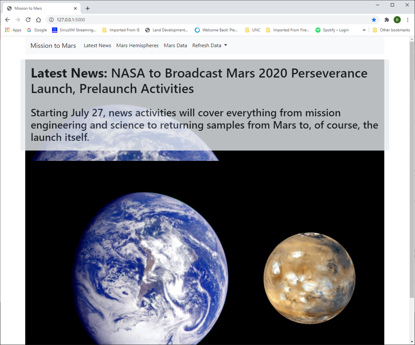
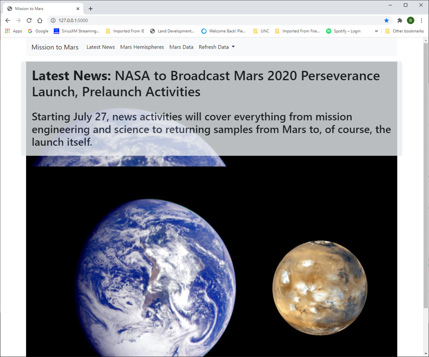

Web Scraping
Goal: Built a set of web pages that allows the user to pull data from the NASA web sites
- NASA Mars News Site for the latest news
- Facts for Mars facts
- Feature images
- Pictures of Mars' hemispheres
- Mission_to_mars notebook which was used to do the initial analysis
- Mission_to_mars python file which I converted from the notebook and then created the routines used to scrape the data.
- app.py python file which is the main file to start the website. It calls the routines from the mission_to_mars file to scrape the data and then save the data into MongoDB. The application creates a Mars_app Mongo database and multiple collections. mars_data for the filename where I store the statistic table html. I used this before understanding about using ' | safe'
- miscellaneous folders associated with converting the python Mission_to_mars file to ddls
- Template folder storing the html files
- Screenshots folder showing the final web pages with examples below
-
- mars_img for the image used for the background
- mars_news for the latest news
- mars_pic for the documents with the hemispheres
 
